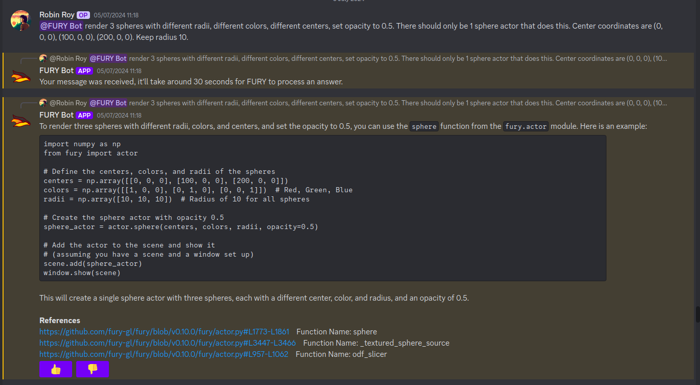
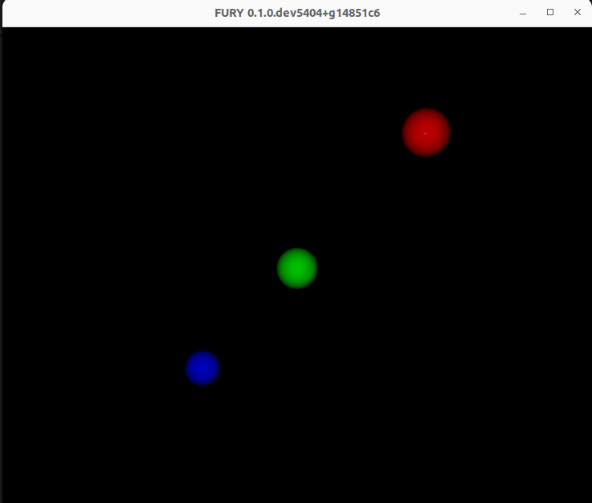
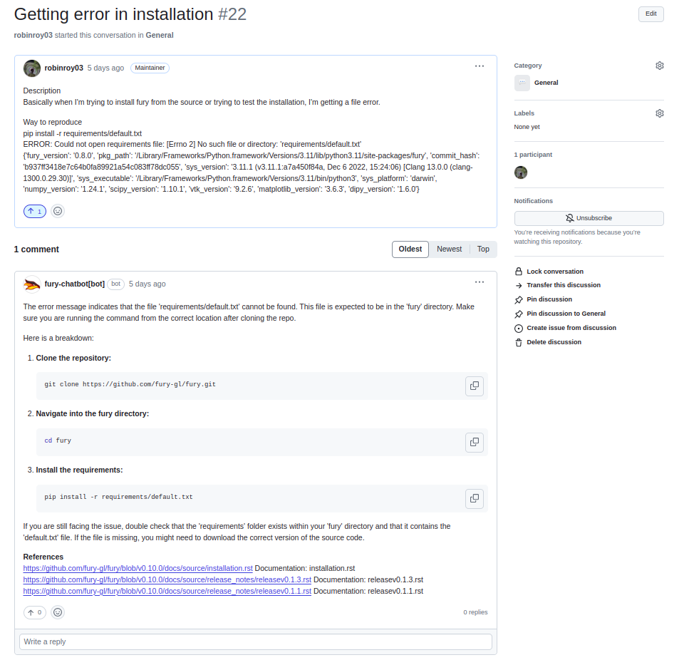

Google Summer of Code Final Work Product#
Name: Robin Roy
Organization: Python Software Foundation
Sub-Organization: FURY
Project: Improving Community Engagement: AI communication automation using LLM
Abstract#
The goal of this project was to implement a Large Language Model (LLM) chatbot that understands the FURY repository. The purpose of the project is to reduce the barrier of entry to scientific visualization. Retrieval Augmented Generation (RAG) was used to get the necessary context for every user query. Multiple variations were explored, including Fine-Tuning models, mixing Fine-Tuning and RAG and RAG alone. Multiple chunking strategies were also explored for data collection and storage. The models are served to the user through a Discord Bot and a GitHub App. All the API endpoints are hosted using HuggingFace Spaces. Pinecone was used as the database for storing embeddings. Benchmarking, data collection, and testing were done on another repository.
Proposed Objectives#
The objectives of the GSoC project could be broadly classified as:
- Figuring out hosting.
We were constrained by the need to minimize hosting costs. We managed to complete the whole project with 100% free hosting. Work here included:
Experiments with Google Colab notebook hosting.
Experiments with Kaggle notebook hosting.
Experiments with HuggingFace spaces hosting.
- Choosing the technologies to use.
Work here included:
Experiments with local GGUF (GPT-Generated Unified Format) models.
Experiments with different quantizations.
Experiments with Ollama.
Experiments with LlamaCPP.
Experiments with Groq.
Experiments with Google Gemini.
- Work on the backend architecture.
Backend architecture was heavily influenced by HuggingFace and its limitations. Work here included:
Choosing the API architecture.
Integrating different models.
Improving concurrent requests support.
Improving the UX of the endpoints.
- Work on improving model accuracy.
This was a recurring work and kept happening on most weeks. It included:
Model Benchmarking
Data Collection
Experiments on Retrieval Augmented Generation.
Experiments on Fine-Tuning.
Experiments on Chunking.
Experiments on Retrieval quantity.
- Discord Bot integration.
The work included:
Building the Discord Bot.
Improving the UX of the bot.
Improving the performance of the bot.
- GitHub App integration.
The work included:
Building the GitHub App integration.
Improving the UX of the integration.
Objectives Completed#
- Figuring out hosting.
As mentioned, we had a constraint on the cost. We explored different options for free hosting. This took us to explore interesting directions like Google Colab and Kaggle Notebooks. In the end, HuggingFace was decided to be the best place. Everything is containerized and currently hosted on HuggingFace.
This also meant that all the upcoming design/architectural choices would have to be based on HuggingFace. This will cause some challenges on the Discord bot hosting but overall HuggingFace was a solid choice.
A very detailed blog on hosting is available here.
The plan is to move all the HuggingFace repositories from my account to FURY’s account. But here, I’ll link to all my repositories which are currently active as I’m writing this report.
- Embeddings Endpoint
This endpoint converts natural language to embeddings. The model is loaded using HuggingFace SentenceTransformer.
- Ollama Endpoint
This endpoint could be used to communicate with the Ollama models. The perk of using this is it is more convenient and generally faster. A separate repository was required because a single free HuggingFace Space cannot allocate more than 16 GB RAM and 2vCPUs. Token generation speed will be hit if it’s not a separate repository.
- Database Endpoint
This endpoint was used to get the K-Nearest (or Approximate) embeddings based on cosine similarity. The parameter K could be passed to adjust it. We used Pinecone as the database.
- FURY Discord Bot
The repository for the Discord bot. It was required to use threading here which is a side-effect of HuggingFace Spaces. HuggingFace server only activates once there is an active live endpoint. Discord did not need an endpoint, but we had to make one to get the server activated. The Discord bot ran on a separate thread while a server ran on the main thread.
- FURY external cloud endpoints
This repository orchestrated external APIs from 3rd party providers like Groq and Gemini. We made it a separate repo to abstract the logic and simplify calling different endpoints as required. You can hot-swap multiple LLM models by changing the REST API parameters.
- GitHub App
Repository for the GitHub application. Receives webhooks from GitHub and acts upon them using GraphQL queries.
- FURY Engine
This is the main endpoint both Discord and GitHub frontend applications hit. It orchestrates all the other endpoints. The architecture of how it works is detailed later below.
- FURY Data Parsing/Benchmarking/Testing Repo (GitHub)
This is a GitHub repository and contains all the parsing, benchmarking and testing scripts.
- Choosing the technologies to use
Choosing the technology depended largely on HuggingFace hardware support. We experimented with inferencing LlamaCPP directly, inferencing Ollama, tested different quantizations and so on. Phi-3-mini-4k-instruct was chosen initially as the LLM. We rolled with it using Ollama for a few weeks. But as luck has it, I ended up discovering Groq is a cloud provider that provides free LLM endpoints. We used Groq from then on, and later also integrated Gemini since they also have a free tier.
You can hot-swap between a local model, a Groq model, a Gemini normal model or a Gemini Fine-Tuned model as you wish using the FURY Engine endpoint. it’ll all integrate cleanly with the Pinecone database outputs and give a standard API response.
- Work on the backend architecture
This is the present backend architecture.

You’re only hitting the FURY Engine endpoint, the remaining are all abstracted away. You can tell the engine you need to use Gemini and it’ll do that for you. This is also expandable, if you have a new provider, you can add a new endpoint and connect it to FURY Engine.
The data to the REST endpoint will look like this
{ "query": "Render a cube in fury", "llm": "llama3-70b-8192", "knn": "3", "stream": false }
Every output response will look like this
{ "response": "Yes, this is how it would be done python import fury....", "references": "1, 2, 3" }
So if you do
curl -X POST https://robinroy03-fury-engine.hf.space/api/groq/generate -H “Content-Type: application/json” -d ‘{“query”: “How do I create a sphere in FURY?”, “llm”: “llama3-70b-8192”, “knn”: “3”, “stream”: false}’
You’ll get a response from
llama3-70b-8192usingGroq. If you dohttps://robinroy03-fury-engine.hf.space/api/google/generateyou can call any Google Gemini models likegemini-1.5-proorgemini-1.5-flash. Same forOllama.A detailed blog on architecture is available here.
- Work on improving model accuracy
The initial version had major issues of hallucination and was unable to retrieve relevant context. We fix them by collecting more data, improving RAG, setting up a benchmark and so on.
The Initial version used a naive parser to parse code, later my mentors told me to use an AST parser. I chunked the entire repo using this and it performed relatively better. For model benchmarking, we had 2 tests, one QnA testing and one code testing. If the code compiles, the model gets one point.
All the benchmarking, data parsing, and database upsertion scripts are here.
We used an image model called
moondream2to validate the output generated by the model. Since FURY is a graphics library, we need to judge the image to see whether it is correct or not.Fine-tuning was done on Google AI Studio. We Fine-Tuned using question/answer pairs from Discord and GitHub discussions. We later tried mixing RAG + Fine-Tuning. A detailed blog on Fine-Tuning is available here.
A detailed blog on benchmarking is available here.
A detailed blog on chunking is available here.
- Discord Bot integration
This included building the Discord bot and connecting it with the backend API. As mentioned above, threading was used to get the bot running on the server. But this won’t affect any other part of the bot and it’ll work as usual.
This is what the discord integration looks like:
The code runs! This is the output of the code:
Work was also done on improving the UX of the bot. There are 👍 and 👎 options available for the user to rate the answer. We’ll use those signals to improve the bot further. There are reference links at the bottom that lead to the exact places where the answers are sourced from. You can technically also use the Discord bot as a search engine if you want to.
Initially, the bot had a sync over async problem. It was later fixed. Now multiple people can converse with the bot simultaneously.
- GitHub App integration
This included building the GitHub app and figuring out how to setup the UX for it. GitHub used GraphQL, but we didn’t use a separate GraphQL library for this. We used a custom setup to query GraphQL endpoints. For us who only work with 1 or 2 commands, it works well. The code is here.
GitHub App UI looks like this:
It is similar to Discord because the results come from the same backend. Refer to the backend architecture above for reference.
Other Objectives#
- Improving the LLM output (ongoing)
This will continue till I’m satisfied. It’s a never ending journey :) Much of this GSoC was setting up things and getting it all to work as one piece. There are tons of new ideas coming up every day to increase LLM accuracy. I’ll explore them and try interesting ones.
- Tests for all endpoints (ongoing)
It’s important to have tests for all endpoints. Testing includes the following:
Check the endpoints with valid data to see the response. Validate the JSON format.
Check the endpoints with incorrect schema and record the response.
Test by adjusting parameters like KNN.
- X Bot (Optional Goal, deferred for now)
I had a talk about this with my mentors. This can be done by plugging the LLM backend into an X bot frontend, but they suggested spending my time improving model accuracy rather than simply adding another frontend for the LLM application.
Other Open Source tasks#
GSoC isn’t all about what I do with my project. It exists along with the 3 other cool projects my peers - Wachiou, Iñigo and Kaustav did. I learnt a lot through them reviewing my PRs and me reviewing their PRs. I attended all the weekly meetings of Wachiou to learn about his progress and to learn new stuff. He attended all my meetings too, which was awesome :)
- Contributions to FURY apart from the ones directly part of GSoC:
fury-gl/fury#862 - Rendering videos on a cube
fury-gl/fury#861 - docstring improvements
fury-gl/fury#891 - Codespell fix
fury-gl/fury#893 - .gitignore modification
fury-gl/fury#924 - Raised issue
- Contributions to other repositories during this time, due to GSoC work:
langchain-ai/langchain#23515 - Langchain issue raised
github/docs#34258 - GitHub issue raised
github/docs#34259 - PR for the raised GitHub issue
orgs/community#136436 - GitHub feature request
Acknowledgement#
I am very thankful to my mentors Serge Koudoro and Mohamed Abouagour. They were awesome and provided me with a comfortable environment to work in. Also got to thank Beleswar Prasad Padhi who gave me a very good introduction to opensource. The good thing about open source is I can still work on this (and other FURY projects) till I’m satisfied. I’m excited to continue contributing to the open source community.
Timeline#
Week |
Description |
Blog Post Link |
|---|---|---|
Week 0 |
Community Bonding! |
|
Week 1 |
It officially begins… |
|
Week 2 |
The first iteration! |
|
Week 3 |
Data Data Data! |
|
Week 4 |
Pipeline Improvements and Taking The Bot Public! |
|
Week 5 |
LLM Benchmarking & Architecture Modifications |
|
Week 6 |
UI Improvements and RAG performance evaluation |
|
Week 7 |
Surviving final examinations |
|
Week 8 |
Gemini Finetuning |
|
Week 9 |
Hosting FineTuned Models |
|
Week 10 |
Learning GraphQL |
|
Week 11 |
Getting the App Live |
|
Week 12 |
Wrapping things up |